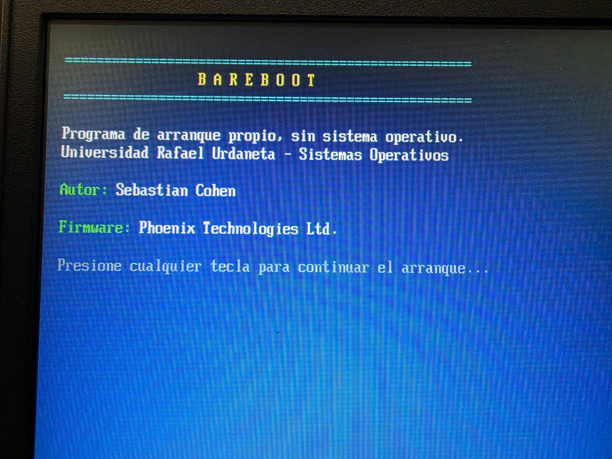
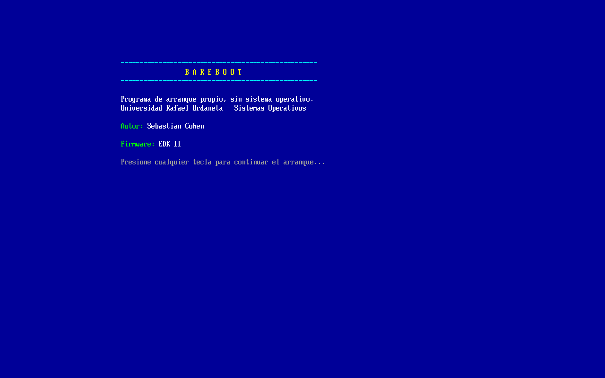

bareboot convierte una memoria USB en un medio de arranque que ejecuta un programa escrito por el autor, sin cargar ningún sistema operativo. Al seleccionar la USB en el menú de arranque de un equipo con firmware UEFI, la pantalla muestra un banner con el nombre del proyecto, el autor y el fabricante del firmware que lo está ejecutando; al pulsar una tecla, el programa devuelve el control al firmware y el equipo continúa con su arranque normal.
Lo importante no es el mensaje en sí, sino que toda la cadena que lo hace posible fue construida por el proyecto: el programa que corre sin sistema operativo, la tabla de particiones del disco, el sistema de archivos, la copia del programa, la escritura en la USB y la verificación del resultado. No se usa ningún grabador externo (Rufus, Etcher, dd) ni el formateador del sistema operativo.
boot/)
Escrito en C, compilado como aplicación UEFI (BOOTX64.EFI). Se ejecuta cuando todavía no hay sistema operativo: para escribir en pantalla o leer el teclado usa los servicios del firmware UEFI.preparer/)
Escrita en Go. Se ejecuta sobre un sistema operativo (Windows o Linux) y usa sus llamadas al sistema para detectar la USB, comprobar que es segura, escribirle la tabla GPT, el sistema de archivos FAT32 y el programa, y verificar lo escrito.Las dos partes nunca se ejecutan al mismo tiempo: la herramienta corre antes, con el sistema operativo encendido; el programa de arranque corre después, cuando ese sistema operativo ya no está.

La línea Firmware: la obtiene el propio programa preguntándole al firmware quién es. En la máquina virtual responde EDK II; en el equipo físico responde Phoenix Technologies Ltd., lo que prueba que el código se ejecutó directamente sobre el hardware real.
Cuando se pulsa el botón de encendido, la CPU no sabe nada de discos ni de sistemas operativos. Empieza a ejecutar instrucciones desde una dirección fija que apunta a un chip de memoria no volátil en la placa base: el firmware. El firmware es el primer software que corre y tiene tres tareas principales:
Existen dos generaciones de firmware en los PC x86:
| BIOS (heredado / Legacy) | UEFI | |
|---|---|---|
| Origen | IBM PC, 1981 | Especificación moderna (UEFI Forum), estándar desde ~2010 |
| Qué carga | Los primeros 512 bytes del disco (sector MBR), en modo real de 16 bits | Un archivo ejecutable (formato PE32+) desde una partición FAT, en 64 bits |
| Servicios | Interrupciones de software (int 0x10 para video, int 0x13 para disco) | Tablas de funciones en C (System Table, Boot Services, protocolos) |
| Particiones | MBR (máximo 2 TiB, 4 particiones primarias) | GPT (hasta 128 particiones, discos enormes); también lee MBR |
| Seguridad | Ninguna | Secure Boot (verificación de firmas) |
Para el sistema operativo y para el firmware, un disco (o una memoria USB) es simplemente un arreglo enorme de bytes dividido en bloques de tamaño fijo llamados sectores; en este proyecto cada sector mide 512 bytes. Cada sector se identifica por su número, el LBA (Logical Block Address): el LBA 0 son los bytes 0–511, el LBA 1 los bytes 512–1023, y así sucesivamente. La posición en bytes de un sector es LBA × 512.
La memoria USB de prueba tiene 966 787 072 bytes, es decir 1 888 256 sectores (LBA 0 a 1 888 255). Todo lo que hace la herramienta consiste en escribir bytes concretos en posiciones concretas de ese arreglo.
Los números de más de un byte (por ejemplo un LBA de 64 bits) se guardan en orden little-endian: el byte menos significativo primero. El número 2048 (0x00000800) se guarda como los bytes 00 08 00 00. Todas las estructuras de este proyecto (GPT, FAT32, estructuras de Windows) usan este orden, y en Go se manejan con encoding/binary.LittleEndian.
Una tabla de particiones divide el disco en zonas independientes (particiones) y dice dónde empieza y termina cada una y de qué tipo es. Sin ella, el firmware no sabe dónde buscar.
Ocupa el LBA 0: 446 bytes de código de arranque BIOS, cuatro entradas de partición de 16 bytes y la firma 55 AA al final. Sus campos son de 32 bits, por lo que no direcciona más de 2 TiB.
Es la tabla definida por la especificación UEFI y la que usa este proyecto. Su organización en un disco es:
0xEE que cubre todo el disco. Sirve para que las herramientas antiguas, que solo entienden MBR, vean el disco como ocupado y no lo sobrescriban."EFI PART", su propia posición, la posición de la copia, la zona usable, el GUID del disco, dónde están las entradas y dos CRC32 (uno del encabezado y otro de las entradas).Un GUID es un identificador de 128 bits. El tipo de partición que nos interesa, la partición de sistema EFI, tiene el GUID C12A7328-F81F-11D2-BA4B-00A0C93EC93B. En disco los tres primeros campos del GUID se guardan en little-endian y los dos últimos tal cual (formato mixed-endian).
Una partición es solo un rango de sectores. Un sistema de archivos organiza esos sectores para guardar archivos con nombre dentro de carpetas. UEFI exige que pueda leer FAT (FAT12/16/32); este proyecto usa FAT32. Su organización es:
Sectores relativos al inicio de la partición, para la ESP de 64 MiB de bareboot.
55 AA.0x0FFFFFFF si es el último. Un archivo es una cadena de clusters. Se guardan dos copias idénticas por redundancia."BOOTX64 EFI"), atributos, fechas, primer cluster y tamaño. Toda subcarpeta empieza con las entradas . (ella misma) y .. (su padre).La ESP (EFI System Partition) es una partición con el GUID de tipo de la sección 2.4 y formateada en FAT. Es donde el firmware busca programas de arranque. En un medio extraíble, todo firmware UEFI x86-64 busca un archivo en la ruta por defecto:
\EFI\BOOT\BOOTX64.EFIPor eso la USB no necesita ninguna configuración en el equipo: basta con que tenga una tabla GPT, una ESP en FAT32 y ese archivo. El firmware los encuentra solo y el usuario elige la USB en el menú de arranque.
Un programa que ejecuta el firmware UEFI es una aplicación UEFI:
.exe de Windows de 64 bits, pero con el campo Subsystem = 10 (EFI_APPLICATION).EFI_HANDLE que identifica la imagen y un puntero a la EFI_SYSTEM_TABLE.ConOut (pantalla), ConIn (teclado), BootServices (memoria, eventos, temporizadores, carga de imágenes) y RuntimeServices (reloj, variables, reinicio).ms_abi) y cadenas de texto en UTF-16.printf, malloc ni archivos. Todo se pide al firmware.Esta distinción es central en la actividad. Las dos partes del proyecto le piden cosas a una capa inferior, pero esa capa es distinta:
| Herramienta preparadora | Programa de arranque | |
|---|---|---|
| Cuándo corre | Con un sistema operativo en ejecución | Sin sistema operativo |
| A quién pide | Al núcleo del sistema operativo | Al firmware UEFI |
| Mecanismo | Llamadas al sistema (syscalls) y API del SO | Funciones de la System Table |
| Ejemplos en Windows | CreateFile, DeviceIoControl, FlushFileBuffers, GetLogicalDrives | ConOut->OutputString, ConOut->SetAttribute, ConIn->ReadKeyStroke, BootServices->WaitForEvent, BootServices->SetWatchdogTimer |
| Ejemplos en Linux | open, pread/pwrite, fsync, ioctl(BLKRRPART), umount2 | |
| Protección | El SO exige permisos de administrador / root para abrir un disco crudo | No hay protección de memoria ni usuarios: el programa tiene control total de la máquina |
Es una función de UEFI que solo ejecuta programas de arranque firmados digitalmente con claves que el firmware tiene registradas (las de Microsoft y algunos fabricantes). Protege contra malware que se instala antes que el sistema operativo (bootkits). BOOTX64.EFI de bareboot no está firmado, así que con Secure Boot activo el firmware se niega a ejecutarlo. Para la prueba física se desactivó temporalmente en el equipo propio y se volvió a activar al terminar; la actividad prohíbe cambiar esta opción en equipos ajenos.
El disco del equipo de prueba está cifrado con BitLocker. La clave de cifrado la guarda el TPM (un chip de seguridad), que solo la entrega si el arranque es idéntico al de siempre, incluido el estado de Secure Boot. Cambiar Secure Boot sin precaución hace que Windows pida la clave de recuperación de 48 dígitos. Por eso, antes de la prueba se suspendió la protección de BitLocker (el disco sigue cifrado) y se reactivó después de volver a encender Secure Boot.
BOOTX64.EFI grabado es idéntico al compilado.BOOTX64.EFIlist, image, write, verify\EFI\BOOT\BOOTX64.EFI\EFI\BOOT\BOOTX64.EFIefi_mainLa herramienta está organizada en capas con dependencias en una sola dirección. Las capas de arriba no conocen los detalles de las de abajo:
main.go, cmd_*.go: interacción con el usuario, confirmación, mensajes.media.go, verify.go, progress.go: qué se escribe y cómo se comprueba.internal/gpt, internal/fat32: lógica pura, sin sistema operativo, portable y verificable con archivos de imagen.internal/disk: reglas de seguridad portables (disk.go) y acceso al hardware específico de cada SO (*_windows.go, *_linux.go).Gracias a esta separación, los paquetes de formatos se probaron completamente con imágenes de disco antes de tocar una USB real, y el soporte para Linux se agregó escribiendo solo dos archivos nuevos, sin cambiar las reglas, la GPT, el FAT32 ni la CLI.
La pieza que une todo es la interfaz estándar de Go io.WriterAt: “algo en lo que puedo escribir bytes en una posición”. Los paquetes gpt y fat32 escriben a través de ella sin saber qué hay detrás. Al escribir la USB se forma una cadena en la que cada eslabón hace una sola cosa:
Para generar una imagen, el último eslabón es un simple archivo (*os.File). Para medir cuánto se va a escribir, es un countingWriter que solo suma tamaños. Para escribir la partición en su posición, io.NewOffsetWriter suma 1 MiB a cada escritura.
En lugar de usar bibliotecas como gnu-efi, el proyecto declara a mano solo lo que necesita de la especificación UEFI. Esto hace visible exactamente qué servicios del firmware se usan. Contiene:
UINT8 … UINT64, UINTN (64 bits en x86-64), CHAR16 (UTF-16), EFI_HANDLE, EFI_EVENT, EFI_STATUS.EFIAPI = __attribute__((ms_abi)): obliga al compilador a llamar a las funciones del firmware con la convención de Microsoft x64 (argumentos en RCX, RDX, R8, R9).EFI_SIMPLE_TEXT_OUTPUT_PROTOCOL: la consola de texto. Se declaran todos sus campos en orden; los que no se usan quedan como void* para conservar las posiciones.EFI_SIMPLE_TEXT_INPUT_PROTOCOL: el teclado, con el evento WaitForKey.EFI_BOOT_SERVICES: declarada hasta SetWatchdogTimer, la última función usada. Las 30 funciones anteriores se declaran todas, porque C ubica cada puntero por su posición en la tabla.EFI_SYSTEM_TABLE: la tabla raíz con FirmwareVendor, ConIn, ConOut y BootServices.EFI_TEXT_ATTR(fg, bg) = fg | (bg << 4).EFI_BOOT_SERVICES, el puntero SetWatchdogTimer apuntaría en realidad a otra función del firmware y el programa haría algo imprevisible. Las estructuras se copiaron de la especificación respetando cada posición./* Fragmento de main.c */
EFI_STATUS EFIAPI efi_main(EFI_HANDLE ImageHandle, EFI_SYSTEM_TABLE *SystemTable) {
out = SystemTable->ConOut;
SystemTable->BootServices->SetWatchdogTimer(0, 0, 0, 0); /* no reset after 5 min */
out->SetAttribute(out, COLOR_TEXT);
out->ClearScreen(out);
print(u" B A R E B O O T\r\n", COLOR_TITLE);
print(u" Autor: ", COLOR_LABEL); print(u"Sebastian Cohen\r\n\r\n", COLOR_TEXT);
print(u" Firmware: ", COLOR_LABEL); print(SystemTable->FirmwareVendor, COLOR_TEXT);
wait_for_key(SystemTable);
return EFI_SUCCESS; /* back to the firmware */
}boot/build.ps1 compila con LLVM, sin bibliotecas del sistema:
| Opción | Para qué |
|---|---|
-target x86_64-unknown-windows | Genera objetos COFF que el enlazador convierte en PE32+, el formato que exige UEFI. |
-ffreestanding | No hay sistema operativo ni biblioteca estándar. |
-fshort-wchar | wchar_t de 16 bits, coherente con UTF-16. |
-mno-red-zone | No usar la zona roja de la pila: el firmware puede usar interrupciones. |
-mno-stack-arg-probe | Evita llamadas a __chkstk, que solo existe en Windows. |
-fno-stack-protector | Sin protección de pila, que depende del SO. |
-subsystem:efi_application | Marca el ejecutable como aplicación UEFI (Subsystem = 10). |
-entry:efi_main | Punto de entrada. |
-nodefaultlib | No enlaza ninguna biblioteca de Windows. |
/Brepro | Compilación reproducible: no escribe la fecha en el encabezado PE. |
El resultado ocupa 3072 bytes. Su encabezado muestra MZ, la firma PE, Machine = 0x8664 (x86-64), Magic = 0x020B (PE32+) y Subsystem = 10.
| Comando | Qué hace | Permisos |
|---|---|---|
preparer list | Lista los discos físicos con identificador, bus, capacidad, modelo, serial y volúmenes, y dice si cada uno se puede usar o por qué se rechaza. | Ninguno en Windows; root en Linux para ver todo |
preparer image [-o archivo] [-efi programa] | Escribe el medio completo en un archivo de imagen de 66 MiB. | Ninguno |
preparer write -disk ID | Prepara una USB: comprobaciones, resumen, confirmación tecleada, escritura con progreso, sincronización y verificación. | Administrador / root |
preparer verify -disk IDpreparer verify -image archivo | Comprueba, sin escribir nada, que un disco o una imagen sea un medio bareboot válido con exactamente el programa compilado. | Root para discos |
Códigos de salida: 0 éxito, 1 error en la operación, 2 uso incorrecto. La identificación de disco es 1 o PhysicalDrive1 en Windows y sde o /dev/sde en Linux.
Table.Write(w io.WriterAt) valida la tabla (número de particiones, que cada una esté dentro de la zona usable, nombres de hasta 36 caracteres) y escribe cinco bloques:
| Orden | Bloque | Posición |
|---|---|---|
| 1 | Copia de respaldo de las entradas | último LBA − 32 |
| 2 | Encabezado de respaldo | último LBA |
| 3 | Entradas principales | LBA 2–33 |
| 4 | Encabezado principal | LBA 1 |
| 5 | MBR protector | LBA 0 |
El orden es deliberado: lo que valida la tabla (el encabezado principal y el MBR) se escribe al final. Si la escritura se interrumpe, el disco queda sin una tabla válida en lugar de con una tabla a medias que el firmware intente usar.
El CRC32 del encabezado se calcula sobre sus 92 bytes con el propio campo de CRC en cero, tal como indica la especificación. Los dos encabezados difieren solo en su propia posición, la posición de la copia y dónde empiezan sus entradas. guid.go convierte GUID de texto al formato mixed-endian y genera GUID aleatorios versión 4 con crypto/rand.
gpt.Read está escrita de forma independiente de Write para poder detectar errores en ella. Comprueba: firma 55 AA y tipo 0xEE del MBR protector; firma, tamaño y CRC32 de ambos encabezados; que cada copia apunte a la otra; que ambas describan la misma tabla; CRC32 de ambos arreglos de entradas y que sean idénticos; y que cada partición esté en la zona usable.
El sistema de archivos se arma primero como un árbol en memoria de nodos (Node): fs.Root().Mkdir("EFI"), Mkdir("BOOT"), AddFile("BOOTX64.EFI", datos). shortName convierte los nombres al formato 8.3 y rechaza caracteres inválidos. Para cada carpeta se generan sus entradas de 32 bytes, con . y .. en las subcarpetas y la etiqueta de volumen BAREBOOT en la raíz.
EFI = 3, BOOT = 4, BOOTX64.EFI = 5–10), construyendo las cadenas en la FAT.fat32.ReadFile(r, "EFI/BOOT/BOOTX64.EFI") sigue el mismo camino que el firmware: valida el BPB (firma, salto inicial, 512 bytes por sector, campos de FAT32, mínimo de clusters), carga la FAT #1 y la compara con la #2, recorre los directorios por nombre y sigue la cadena de clusters, con protección contra cadenas que apunten fuera de rango o formen ciclos.
writeMedia(w, diskSectors, bootProgram) en media.go produce el medio completo:
\EFI\BOOT\BOOTX64.EFI y escribe el FAT32 a través de io.NewOffsetWriter(w, 2048 × 512), de modo que el paquete fat32 escribe como si la partición empezara en el byte 0.El FAT32 se escribe antes que la GPT por la misma razón de la sección 5.2: una ejecución interrumpida deja un disco sin tabla válida. La misma función genera el archivo de imagen y prepara la USB; solo cambia el io.WriterAt que recibe y el número de sectores (la copia de la GPT se escribe al final real de cada destino).
Figura 3. Contenido final de la memoria USB de prueba (1 888 256 sectores).
Cada disco se describe con: ID, Path, fabricante, producto, serial, bus, si es removible, tamaño, tamaño de sector, volúmenes montados y si es el disco del sistema. Problems() devuelve todos los motivos por los que un disco no puede usarse:
| Regla | Motivo |
|---|---|
| Es el disco del sistema | Contiene el sistema operativo en ejecución. |
| El bus no es USB | La actividad exige una USB dedicada; descarta discos internos SATA/NVMe y discos virtuales. |
| No reporta modelo ni serial | No se puede comprobar su identidad. |
| Sin medio o menor de 66 MiB | Capacidad insuficiente. |
| Sector distinto de 512 bytes | Las estructuras se calculan para sectores de 512 bytes. |
Si no se puede determinar cuál es el disco del sistema, la lista completa falla: sin esa información ningún disco puede declararse seguro. SameDevice() permite detectar si el disco cambió entre la confirmación y la escritura.
Cada disco se abre como \\.\PhysicalDriveN con acceso 0 (solo consultas, sin permisos de administrador) y se interroga a su driver con DeviceIoControl:
| Código de control | Respuesta |
|---|---|
IOCTL_STORAGE_QUERY_PROPERTY | STORAGE_DEVICE_DESCRIPTOR: fabricante, producto, serial, BusType, medio removible. |
IOCTL_DISK_GET_DRIVE_GEOMETRY_EX | Tamaño de sector y tamaño total. |
IOCTL_VOLUME_GET_VOLUME_DISK_EXTENTS | Para cada letra (GetLogicalDrives), en qué disco físico vive. El disco que contiene %SystemDrive% es el del sistema. |
Linux publica el hardware como archivos de texto en /sys, así que listar discos consiste en leer archivos:
| Dato | Fuente |
|---|---|
| Discos | /sys/block/* que tengan el enlace device (descarta loop, ram, zram, dm) |
| Tamaño / sector | /sys/block/sdX/size (unidades de 512) y queue/logical_block_size |
| Modelo | /sys/block/sdX/device/vendor y model |
| Bus | La ruta real del enlace: .../usb1/1-1/.../block/sde contiene /usb |
| Serial | Archivo serial del nodo USB (el primer padre con idVendor) |
| Montajes / sistema | /proc/self/mountinfo; el disco que tiene montado / es el del sistema |
disk.Writer implementa la misma operación en los dos sistemas operativos:
| Paso | Windows (writer_windows.go) | Linux (writer_linux.go) | Por qué |
|---|---|---|---|
| Permisos | Token elevado (administrador) | geteuid() == 0 (root) | Solo el superusuario escribe discos crudos. |
| Liberar volúmenes | FSCTL_LOCK_VOLUME + FSCTL_DISMOUNT_VOLUME (5 reintentos) | umount2 | El sistema de archivos viejo no debe seguir activo ni con caché mientras se escribe debajo. |
| Abrir | CreateFile(GENERIC_READ|WRITE, FILE_FLAG_WRITE_THROUGH) | open(O_RDWR | O_EXCL | O_SYNC) | O_EXCL hace que el núcleo rechace la apertura si algo sigue montado. |
| Escribir / leer | WriteFile / ReadFile con posición | pwrite / pread | Escritura en posiciones exactas. |
| Asegurar | FlushFileBuffers | fsync | Que nada quede en caché. |
| Releer sin caché | (no aplica) | ioctl(BLKFLSBUF) | Que la verificación lea el dispositivo, no la RAM. |
| Avisar al núcleo | IOCTL_DISK_UPDATE_PROPERTIES | ioctl(BLKRRPART) | Que relea la nueva tabla de particiones. |
Explain() traduce los códigos de error del sistema (ERROR_ACCESS_DENIED, EACCES, EBUSY, EROFS, ENODEV, EIO, EINVAL…) a mensajes que indican qué hacer: ejecutar como administrador, cerrar programas, revisar el interruptor de protección, la USB se desconectó, fallo del dispositivo, acceso desalineado.
La cancelación usa signal.NotifyContext: progressWriter revisa el contexto antes de cada escritura y se detiene entre dos escrituras en lugar de matar el proceso a mitad de una. Como la GPT se escribe al final, una preparación cancelada deja la USB sin tabla válida y el firmware ni siquiera intentará arrancarla.
| Relectura (verifyWritten) | Estructural (verifyStructure) | |
|---|---|---|
| Pregunta | ¿El dispositivo guardó lo que se le envió? | ¿El resultado es un disco booteable correcto? |
| Cómo | recordingWriter guarda una copia de cada escritura; tras sincronizar se releen esas posiciones y se comparan byte a byte | gpt.Read + búsqueda de la ESP + fat32.ReadFile + comparación con el programa fuente |
| Detecta | USB defectuosa o falsificada, escrituras perdidas, caché que no se vació | Errores de concepto en el código: CRC mal calculado, campo mal escrito, cadena rota |
Se necesitan las dos: si Write tuviera un error, la relectura solo confirmaría ese mismo error. Por eso la verificación estructural interpreta el disco desde cero, como lo haría el firmware.
| Herramienta | Versión usada | Uso |
|---|---|---|
| LLVM (clang, lld-link) | 23.1.6 | Compilar el programa de arranque |
| Go | 1.27.4 | Herramienta preparadora (compilación nativa y cruzada a Linux) |
| QEMU + EDK II (OVMF) | 11.1.0 | Máquina virtual con firmware UEFI |
| WSL 2 (Ubuntu) | kernel 6.18 | Ejecutar la versión Linux de la herramienta y verificadores |
| usbipd-win | 5.3.0 | Pasar la USB de Windows a WSL |
| gdisk, dosfstools, mtools (en WSL) | — | Verificación independiente: sgdisk, fsck.vfat, mdir, mtype |
| golang.org/x/sys | v0.50.0 | Acceso a la API de Windows y a syscalls de Linux desde Go |
| Script | Qué hace |
|---|---|
boot\build.ps1 | Compila main.c y deja BOOTX64.EFI en build\esp\EFI\BOOT\. |
scripts\build-image.ps1 | Compila el programa, compila la herramienta para Linux (GOOS=linux) y Windows, y genera build\bareboot.img ejecutando la versión Linux dentro de WSL. |
scripts\verify-image.ps1 | Verifica la imagen con herramientas que no forman parte del proyecto: sgdisk -v, tipo ESP, fsck.vfat -n, árbol de archivos con mdir y SHA-256 del programa con mtype. |
scripts\run-qemu.ps1 | Arranca una imagen en QEMU con el firmware UEFI de QEMU (código en pflash de solo lectura, variables en build\vars.fd). |
scripts\preparer.ps1 | Ejecuta build/preparer-linux en WSL como root (wsl -u root), equivalente a “ejecutar como administrador”. |
La herramienta compila y funciona en Windows. Sin embargo, el equipo de desarrollo tiene activado Smart App Control, una protección de Windows 11 que bloquea ejecutables sin firma digital cuando su modelo de reputación los considera peligrosos. Un programa nuevo, sin firmar, que bloquea volúmenes y sobrescribe sectores crudos coincide con el perfil de un malware que destruye discos, y fue bloqueado.
La solución fue agregar el backend de Linux y ejecutar la herramienta dentro de WSL 2, la máquina virtual Linux integrada en Windows. Smart App Control solo analiza ejecutables de Windows; el binario ELF de Linux lo ejecuta el núcleo de Linux de la máquina virtual. Con usbipd-win la USB se desconecta de Windows y se conecta a esa máquina virtual, que la ve como /dev/sde.
No se desactivó ninguna protección de Windows. En un equipo sin Smart App Control, preparer.exe write -disk 1 ejecutado como administrador hace exactamente lo mismo con la API de Windows.
QEMU emula un PC completo. Con el firmware EDK II (OVMF) como pflash, la máquina virtual arranca igual que un equipo UEFI real: lee la GPT de la imagen, encuentra la ESP, abre \EFI\BOOT\BOOTX64.EFI y lo ejecuta. Al pulsar una tecla, el programa retorna y el boot manager, sin más opciones, abre su menú de configuración (UiApp). Antes de la prueba física se copió la USB completa a un archivo y se arrancó en QEMU, de modo que se probó exactamente lo grabado en la memoria.
El proyecto se construyó en once pasos. Cada uno terminó probado y en un commit (Conventional Commits, en inglés).
| Paso | Qué se hizo | Commit |
|---|---|---|
| 1 | Análisis del firmware del equipo (UEFI, sin CSM, Secure Boot desactivable), elección de la ruta UEFI, instalación de LLVM, QEMU, Go y Git. | — |
| 2 | “Hola mundo” UEFI: efi.h mínimo, main.c, scripts de compilación y QEMU. | ad417aa |
| 3 | Banner con colores, desactivación del watchdog, espera de tecla y retorno al firmware. | 7e59c4b |
| 4 | Paquete gpt: MBR protector, encabezados y entradas con CRC32; imagen verificada con sgdisk. | 680c554 |
| 5 | Paquete fat32 y writeMedia: primera imagen booteable generada íntegramente por el proyecto. | 92b77c8 |
| 6 | Scripts de construcción, verificación externa y arranque de la imagen en QEMU. | 52af028 |
| 7 | Paquete disk: detección de discos en Windows, reglas de seguridad, comando list. | 0548275 |
| 8 | Comando write (confirmación, bloqueo, escritura, progreso) y backend de Linux por el bloqueo de Smart App Control. Primera USB grabada. | 3d05b56 |
| 9 | Verificación por relectura y estructural, comando verify, cancelación con Ctrl+C, compilación reproducible. | 281af6b |
| 10 | Nombre del autor en el banner, prueba de la USB física en QEMU y arranque en el equipo real. | a5acbfd |
| 11 | Documentación. | — |
DISK BUS SIZE MODEL VOLUMES STATUS
sda SCSI 722.9 MiB Msft Virtual Disk - REJECTED: not a USB disk (bus: SCSI)
sdd SCSI 1.0 TiB Msft Virtual Disk / REJECTED: system disk (holds the running OS);
not a USB disk (bus: SCSI)
sde USB 922.0 MiB Generic Mass-Storage - OK - can be used
Salida resumida de preparer list en WSL. En Windows, el disco 0 (NVMe, C:) aparece rechazado como disco del sistema y la USB como disco 1.
Type "ERASE DISK sde" to continue, or anything else to cancel: ERASE DISK sde
Releasing the volumes of disk sde (lock/unmount)...
[1/3] Writing boot media...
[##############################] 100% 1.0 MiB / 1.0 MiB
[2/3] Flushing pending writes to the device...
[3/3] Verifying...
[OK ] read-back: 1.0 MiB in 15 regions identical to what was written
[OK ] GPT: protective MBR, primary and backup headers and entries valid (CRC32)
[OK ] ESP: "EFI System Partition", LBA 2048-133119 (64.0 MiB)
[OK ] FAT32: boot sector and both FATs valid, \EFI\BOOT\BOOTX64.EFI found
[OK ] boot program: 3072 bytes, identical to the source file
Done: disk sde prepared and verified (1.0 MiB written).
Las 15 regiones son: 5 de la GPT, 4 de datos (raíz, EFI, BOOT, el programa), 2 FAT y 4 sectores de arranque del FAT32 (sector de arranque, FSInfo y sus respaldos).
| Herramienta externa | Resultado sobre la USB |
|---|---|
sgdisk -v /dev/sde | No problems found |
lsblk | sde1: 64 MiB, vfat, etiqueta BAREBOOT, tipo EFI System |
fsck.vfat -n /dev/sde1 | 4 files, 9/128992 clusters, sin errores |
mdir + sha256sum | \EFI\BOOT\BOOTX64.EFI presente, hash idéntico al compilado |
Para comprobar que la verificación no aprueba cualquier cosa, se dañó un solo byte en copias de la imagen:
| Byte alterado | Resultado de preparer verify |
|---|---|
| Encabezado GPT principal | FAIL primary header: header CRC32 mismatch |
| Encabezado GPT de respaldo | FAIL backup header: header CRC32 mismatch |
| Arreglo de entradas | FAIL entry array CRC32 mismatch |
| Sectores por cluster del BPB | FAIL 8 sectors per cluster, expected 1 |
| Solo la FAT #1 | FAIL FAT #2 differs from FAT #1 |
| Un byte de BOOTX64.EFI | FAIL BOOTX64.EFI on the media differs from the boot program |
Procedimiento seguido en el equipo real: suspensión de BitLocker tras verificar la clave de recuperación, Secure Boot desactivado, arranque desde la USB con el menú de arranque del firmware, banner mostrado, Secure Boot reactivado y protección de BitLocker reactivada. El estado final se comprobó: Secure Boot activo y BitLocker protegido.
| Requisito | Cómo se cumple |
|---|---|
| 1. Programa de arranque propio | boot/main.c: código del autor con resultado visible (banner con nombre del autor) que se ejecuta sin sistema operativo. |
| 2. Tipo de arranque | UEFI, compatible con el equipo de prueba (solo UEFI). Aplicación PE32+ x86-64. |
| 3. Construcción del medio | writeMedia: GPT + ESP FAT32 + \EFI\BOOT\BOOTX64.EFI, la estructura que el firmware necesita para localizar el programa. |
| 4. Preparador propio | La herramienta selecciona la USB y crea las estructuras con código propio (paquetes gpt y fat32), sin formateador del SO ni grabador externo. |
| 5. Identificación del destino | list y el resumen de write muestran identificador, bus, capacidad, modelo, serial y volúmenes; Problems() verifica que sea una USB válida. |
| 6. Confirmación de sobrescritura | Advertencia de pérdida total de datos y frase tecleada ERASE DISK <id>. |
| 7. Progreso y resultado | Barra de progreso, sincronización (fsync/FlushFileBuffers), relectura byte a byte y verificación estructural. |
| 8. Manejo de errores | Mensajes específicos para falta de permisos, destino no válido, desconexión, capacidad insuficiente, fallo de escritura o verificación; nunca se declara éxito si algo falló. |
| 9. Prueba virtual | QEMU + firmware UEFI con la imagen generada y con una copia exacta de la USB física. |
| 10. Arranque físico | Lenovo V14 G4, firmware Phoenix: banner mostrado (Figura 5). |
| Regla | Cómo se cumple |
|---|---|
| Código de arranque propio | El comportamiento visible proviene de main.c; no se usa ninguna imagen de sistema operativo. |
| Preparación propia | Particionado, formateo, escritura, sincronización y verificación los hace la herramienta. |
| Syscalls y firmware | Herramienta: API Win32 y syscalls de Linux. Programa: servicios UEFI (sección 2.8). |
| Formato coherente | GPT con ESP del tipo correcto y FAT32 válido; no se copia un ejecutable a una unidad formateada por el SO. |
| Compatibilidad comprobada | Equipo UEFI; Secure Boot desactivado temporalmente solo en el equipo propio y restaurado al terminar. |
| Destino seguro | USB dedicada; rechazo del disco del sistema, de discos no USB y de discos sin identidad; confirmación; nueva comprobación de identidad antes de escribir. |
| Escritura completa | Errores atendidos, sincronización, relectura y cierre de archivos y dispositivos; una preparación interrumpida se informa como no completada. |
| Programa no destructivo | El programa de arranque no accede a ningún disco. |
| Problema | Causa | Solución |
|---|---|---|
| El ejecutable de Windows de la herramienta es bloqueado | Smart App Control considera peligroso un programa sin firma que escribe discos crudos. | Backend de Linux ejecutado en WSL 2 con la USB pasada por usbipd-win (sección 6.3). No se desactivó la protección. |
| La USB mostraba otro programa que el compilado | lld-link escribe la fecha en el encabezado PE: cada compilación generaba un archivo distinto. | Opción /Brepro: compilación reproducible (mismo SHA-256 en cada compilación). |
El serial de la USB salía como vhci_hcd.0 | Al subir por el árbol de sysfs se pasaba del dispositivo USB al controlador virtual de usbipd. | Detenerse en el primer directorio con idVendor. |
| Herramientas de disco “no encontradas” en WSL | wsl -e no carga un PATH con /usr/sbin. | PATH explícito en verify-image.ps1. |
usbipd attach fallaba | Necesita una sesión de WSL en ejecución. | Mantener una sesión abierta (wsl -e sleep 3600). |
| Verificación de la imagen colgada | dd bs=512 hacía 131 072 escrituras pequeñas a través del puente de archivos WSL–Windows. | Bloques de 1 MiB con desplazamientos en bytes. |
gofmt marcaba archivos correctos | Finales de línea CRLF. | gofmt -w; el repositorio guarda LF. |
| Riesgo de bloqueo por BitLocker | Cambiar Secure Boot altera las mediciones del TPM. | Verificar la clave de recuperación, suspender la protección y reactivarla al final. |
| Término | Definición |
|---|---|
| BPB | BIOS Parameter Block: estructura en el sector 0 de un volumen FAT que describe su geometría. |
| Boot manager | Parte del firmware que elige y ejecuta el programa de arranque según las opciones configuradas. |
| Cluster | Unidad mínima de asignación de espacio de un sistema de archivos FAT. |
| CRC32 | Código de comprobación de 32 bits usado por GPT para detectar alteraciones. |
| CSM | Compatibility Support Module: modo de compatibilidad BIOS dentro de un firmware UEFI. |
| ESP | EFI System Partition: partición FAT donde el firmware busca programas de arranque. |
| FAT | File Allocation Table: tabla que encadena los clusters de cada archivo. |
| Firmware | Software almacenado en la placa base que se ejecuta al encender el equipo. |
| GPT | GUID Partition Table: esquema de particiones de la especificación UEFI. |
| GUID | Identificador global único de 128 bits. |
| IOCTL | Operación de control enviada a un driver (Windows: DeviceIoControl; Linux: ioctl). |
| LBA | Logical Block Address: número de sector de un disco. |
| OVMF / EDK II | Implementación de firmware UEFI de código abierto usada por QEMU. |
| PE32+ | Formato de ejecutable de 64 bits de Windows, usado también por las aplicaciones UEFI. |
| Secure Boot | Función UEFI que solo ejecuta programas de arranque firmados con claves confiables. |
| Smart App Control | Protección de Windows 11 que bloquea ejecutables sin firma de reputación desconocida. |
| Syscall | Llamada al sistema: petición de un programa al núcleo del sistema operativo. |
| System Table | Estructura que el firmware UEFI entrega al programa con acceso a todos sus servicios. |
| TPM | Trusted Platform Module: chip que guarda claves y mide el proceso de arranque. |
| usbipd-win | Herramienta que comparte dispositivos USB de Windows con WSL mediante USB/IP. |
| Watchdog | Temporizador que reinicia el equipo si una aplicación UEFI no termina a tiempo. |
| WSL 2 | Windows Subsystem for Linux: máquina virtual ligera con núcleo Linux integrada en Windows. |
CreateFile, DeviceIoControl, IOCTL_STORAGE_QUERY_PROPERTY, IOCTL_DISK_GET_DRIVE_GEOMETRY_EX, IOCTL_VOLUME_GET_VOLUME_DISK_EXTENTS, FSCTL_LOCK_VOLUME y FSCTL_DISMOUNT_VOLUME.BLKRRPART, BLKFLSBUF); páginas de manual de open(2), fsync(2), umount2(2).